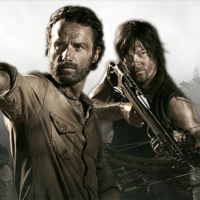

S É R I E S - M A N I A
|  | GÊNERO | Ficção/Fantasia, Suspense/Terror |
|---|---|---|
| STATUS | Renovada | |
| ESTRÉIA | EUA 31/10/2010 | |
The Walking Dead (Os Mortos-Vivos, em Portugal) é uma publicação mensal de "banda desenhada" (em Portugal) ou "história em quadrinhos" (no Brasil), publicada nos Estados Unidos pela Image Comics a partir de2003. A história foi criada e escrita por Robert Kirkman e o desenhista Tony Moore, substituído por Charlie Adlard a partir da edição número 7, mas que continuou a desenhar as capas até a edição número 24. A série narra a história de um grupo de pessoas tentando sobreviver em um mundo atingido por um apocalipse zumbi. No Brasil a série é publicada em forma de encadernados pela HQM Editora. Em Portugal está a ser editada pela Devir Livraria.